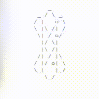

ABOUT
This is the homepage of Isaac Meyer. I am a post-doc at Massachusetts General Hospital in the Radiation Oncology department where I work on project related to Monte Carlo transport. I completed my Ph.D. at MIT in the department of Nuclear Science and Engineering where my research focus was in uncertainty propagation of neutron cross section data.
VARIOUS DIGITAL FOOTPRINTS

Web design inspiration from my friend
Adrianne.